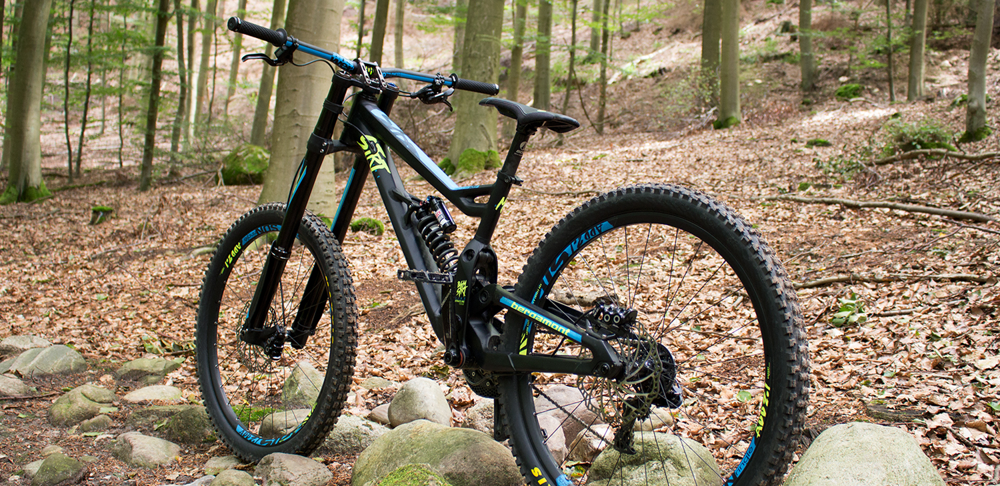
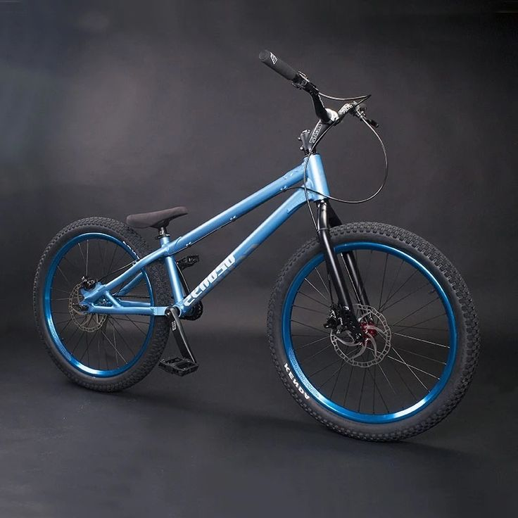

downhill-bike
Downhill, auch Bergabfahrt, ist eine Variante verschiedener Sportarten,
insbesondere des Radsports (genauer Mountainbiking).
Dabei kommt es darauf an, eine bergab führende Strecke
in möglichst kurzer Zeit zu bewältigen.
Im englischen
Sprachgebrauch steht Downhill gleichbedeutend für die Abfahrt
als Disziplin des alpinen Skisports.
купити

BMX
Though originally denoting a bicycle intended for BMX racing, the term "BMX bike" is now used to encompass race bikes, as well as those used for the dirt, vert, park, street,
flatland and BMX freestyle disciplines
of BMX. BMX frames are made of various types
of steel, and (largely in the racing category) aluminum or carbon. Cheaper, low-end bikes are usually made
of steel. High-range bikes are mostly chromoly or high
tensile steel, although the latter is noticeably heavier with respect to strength.
High-performance BMX bikes use lightweight 4130 chromoly, or generation 3 chromoly.[1].
купити

trial bike
Mountain bike trials, also known as observed trials, is a discipline of mountain biking in which the
rider attempts to pass through an obstacle course without setting foot
to ground. Derived from motorcycle trials,1 it originated in Catalonia, Spain as trialsín (from trial sin motor, "motorcycle trials without an engine")
and is said to have been invented by Pere Pi,
the father of Ot Pi, a world champion motorcycle trials rider. Pi's father had
wanted his son to learn motorcycle trials by practicing on an ordinary bicycle.
купити